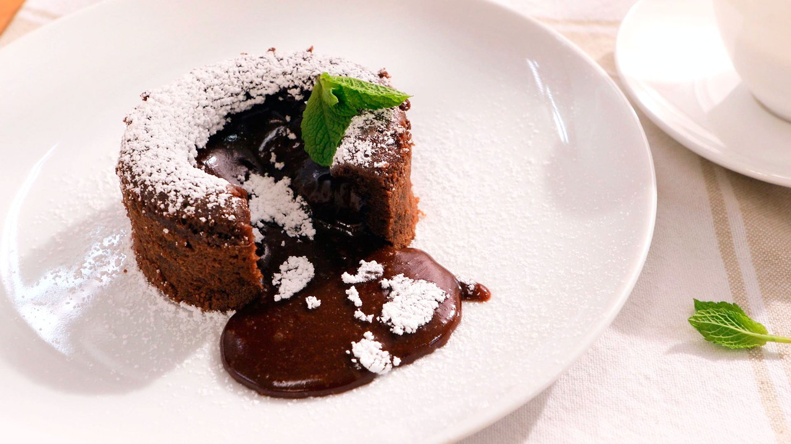

Coulant de chocolate
La mayor tentación de irresistible chocolate 70% puro

Ingredientes:
- 200 g de chocolate negro (con al menos 70% de cacao)
- 150 g de mantequilla
- 3 huevos
- 3 yemas de huevo
- 100 g de azúcar glas
- 1 cucharadita de extracto de vainilla
- 50 g de harina
- Mantequilla y harina para engrasar los moldes
- Azúcar glas para decorar (opcional)
- Helado de vainilla o crema batida para servir (opcional)
Instrucciones
- Precalienta el horno a 200°C (180°C si es con ventilador). Engrasa y enharina los moldes individuales para soufflé o ramequines.
- Derrite el chocolate y la mantequilla juntos en un recipiente resistente al calor, ya sea en el microondas o a baño maría. Mezcla bien hasta obtener una mezcla suave y homogénea.
- En un tazón grande, bate los huevos, las yemas y el azúcar glas hasta que la mezcla esté espumosa y más clara.
- Agrega el extracto de vainilla a la mezcla de huevo y luego incorpora suavemente la mezcla de chocolate derretido.
- Tamiza la harina sobre la mezcla y revuelve hasta que esté completamente incorporada.
- Vierte la masa en los moldes preparados, llenándolos hasta aproximadamente 3/4 de su capacidad.
- Hornea en el horno precalentado durante unos 10-12 minutos, o hasta que los bordes estén firmes pero el centro aún esté suave.
- Retira del horno y deja reposar por un minuto antes de desmoldar.
- Sirve los coulants de chocolate inmediatamente, espolvoreados con azúcar glas si lo deseas. Puedes acompañarlos con helado de vainilla o crema batida.
¡Disfruta de este irresistible postre con su centro fundido de chocolate!